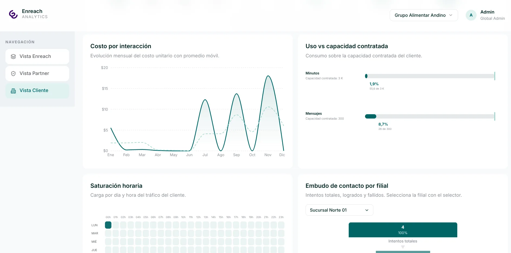
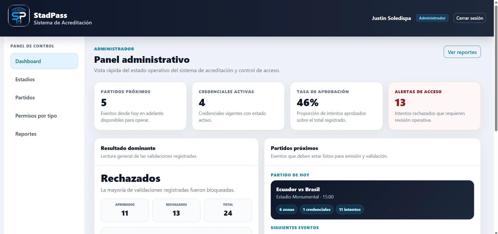

Data Warehouse, ETL, modelo dimensional y dashboards analíticos para el sistema Enreach.
Mi aporte: desarrollo de la Vista Partner, reportes analíticos, consultas SQL y conexión de datos para el dashboard.
- Modelo Kimball
- PostgreSQL
- Pentaho Spoon
- React
Ver repositorio del equipo

Sistema de acreditación y control de acceso a estadios con roles, credenciales digitales y validación por zona.
Mi aporte: módulo de operador, usuario final, emisión de credenciales, simulación de acceso y reportes.
- Laravel + PHP
- Middleware
- Bootstrap
- MySQL
Ver repositorio del equipo

Juego 2D de exploración submarina en Unity donde el jugador administra oxígeno y vidas, recolecta minerales y combate enemigos.
Mi aporte: Nivel Difícil, BGM, Pantallas y Animaciones.
- Unity 2D
- C#
- URP 2D
- Tilemaps
Ver repositorio del equipo